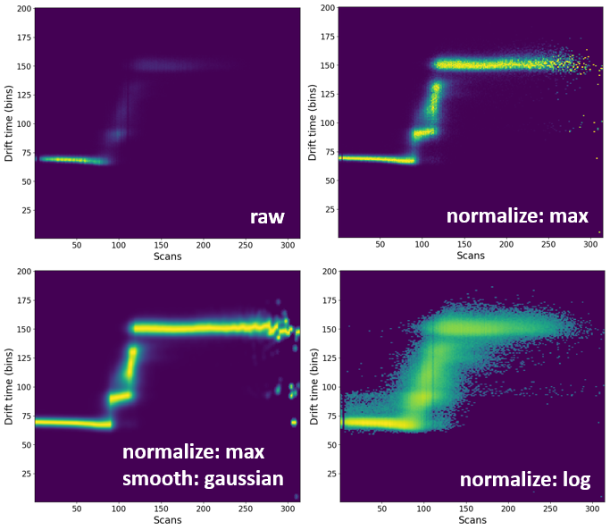

Processing heatmaps
All two-dimensional heatmaps can be processed to produce a more visually attractive figure.
Video tutorial
Loading data
Please have a look at Loading Text files. In short, you either drag-and-drop the text file in the main window of ORIGAMI-ANALYSE or go to File -> Open IM-MS Text file.
Example
In this example we will use a file provided with the ORIGAMI distribution. You can download heatmap files or you can find them in your ORIGAMI directory (example_data/text).
Opening processing panel
The easiest way to process a heatmap is to find it in the Document Tree, right-click on it and select the Process... option. This will open a new window where you can select desired parameters and also execute the action. If you simply open the Processing window, it is not guaranteed ORIGAMI will know which heatmap you want to process, and will use the currently plotted heatmap as the data source. Of course, this is only a concern if you have more than one heatmap in the document.

Processing
Heatmaps can be processed in a number of ways, however the most common is to remove noise (using the threshold value) and normalize it (using the On/Off toggle).
Setup your desired parameters and you can either replot the heatmap (data will not be added to the document) or process (data will be added to the document).
